ResidualVM
Dieser Artikel wurde für die folgenden Ubuntu-Versionen getestet:
Ubuntu 16.04 Xenial Xerus
Ubuntu 14.04 Trusty Tahr
Zum Verständnis dieses Artikels sind folgende Seiten hilfreich:
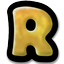
ResidualVM  (ehemals Residual) ist ein 3D-Spiel-Interpreter, mit dem man GrimE-basierte Adventures von LucasArts, welche die Scriptsprache Lua verwenden, auf dem PC spielen kann. Das Programm nutzt OpenGL für die 3D-Grafik-Hardware-Beschleunigung. Ein Software-Renderer für Maschinen ohne OpenGL ist integriert. ResidualVM ist ein Schwesterprojekt von ScummVM und befindet sich in stetiger Entwicklung. Unterstützt werden derzeit die Titel Grim Fandango™ und Myst III: Exile. An Flucht von Monkey Island™, dem vierten Teil der Saga, wird gearbeitet. In wieweit ein Spiel derzeit von einer Entwicklungsversion unterstützt wird kann man der Projektseite entnehmen.
(ehemals Residual) ist ein 3D-Spiel-Interpreter, mit dem man GrimE-basierte Adventures von LucasArts, welche die Scriptsprache Lua verwenden, auf dem PC spielen kann. Das Programm nutzt OpenGL für die 3D-Grafik-Hardware-Beschleunigung. Ein Software-Renderer für Maschinen ohne OpenGL ist integriert. ResidualVM ist ein Schwesterprojekt von ScummVM und befindet sich in stetiger Entwicklung. Unterstützt werden derzeit die Titel Grim Fandango™ und Myst III: Exile. An Flucht von Monkey Island™, dem vierten Teil der Saga, wird gearbeitet. In wieweit ein Spiel derzeit von einer Entwicklungsversion unterstützt wird kann man der Projektseite entnehmen.
Die grafische Oberfläche entspricht der von ScummVM.
| 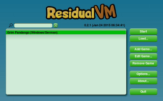 | 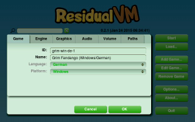 |
| ResidualVM | Einrichtung |
Installation¶
Paketquelle¶
Über die Paketquelle kann das Programm hinzugefügt werden [1]:
residualvm (multiverse)
 mit apturl
mit apturl
Paketliste zum Kopieren:
sudo apt-get install residualvm
sudo aptitude install residualvm
Es empfiehlt sich jedoch die Version von der Entwicklerseite zu verwenden, da sie aktueller ist als die in den Quellen.
Paket¶
Die Entwickler von ResidualVM bieten .deb-Pakete (32 und 64 Bit) für Ubuntu an. Diese lassen sich von der Projektseite herunterladen und wie gewohnt installieren [2].
Danach findet man unter "Anwendungen -> Spiele -> ResidualVM" einen entsprechenden Menüeintrag. In Xfce findet man den Eintrag unter dem Menüpunkt "Applications -> Spiele".
Static¶
Alternativ kann eine statisch gelinkte Version von der Projektseite  heruntergeladen werden. Das Archiv nach /opt entpacken [3] mittels des folgenden Befehls [4] [5]:
heruntergeladen werden. Das Archiv nach /opt entpacken [3] mittels des folgenden Befehls [4] [5]:
sudo tar -xvf residualvm-0.2.1-linux64.tar.gz -C /opt sudo ln -s /opt/ResidualVM/ResidualVM /usr/local/bin/ResidualVM
Über ResidualVM kann das Programm gestartet [6] werden. Auf Wunsch einen Menüeintrag vornehmen [7].
| 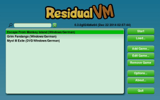 | 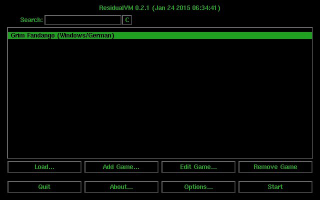 |
| Entwicklungsversion | Classic Theme |
Entwicklungsversion¶
Auf der Projektseite können Daily Builds heruntergeladen werden. Diese können instabil sein aber auch zusätzliche Spieltitel unterstützen. Installiert werden sie wie die stabilen Fassungen der Software.
Adventures aufspielen¶
Im Homeverzeichnis einen Spieleordner anlegen - z.B. ~/Spiele/ResidualVM. Für jedes zu installierende Spiel einen weiteren in diesem Ordner anlegen - z.B. ~/Spiele/ResidualVM/Grim für Grim Fandango. Der Wikiseite des Projektes die benötigten Dateien entnehmen und diese vom Installationsmedium in den dafür erstellten Ordner hineinkopieren. Je nach Spiel müssen die Dateinamen ggf. noch geändert werden - welche das sind kann man der Projektseite entnehmen.
Einrichten¶
Beim ersten Start von ResidualVM ist die Liste der hinterlegten Spiele leer. Um ein Spiel der Liste hinzuzufügen, wie folgt vorgehen:
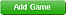"Add Game... -> SPIELEORDNER -> Choose"
Sofern das Spiel erkannt wurde können in diesem Menüpunkt zusätzliche Einstellungen vornehmen.
Die Spiele können nun aus dem Programm heraus gestartet werden.
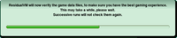
Mass Add¶
Sofern alle zu installierenden Spiele in einem Ordner, z.B. ~/Spiele/ResidualVM, abgelegt sind kann man durch drücken von ⇧ die Schaltfläche 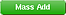 zu Tage fördern. Das Programm durchsucht nun das angegebene Verzeichnis nach unterstützten Spielen und übernimmt diese. Die so entstandene Liste noch kontrollieren und fehlerhafte Einträge entfernen.
Alle hinzugefügten Spiele werden beim ersten Start auf fehlende Dateien hin überprüft. Sollte etwas fehlen kann dies auf der Projektseite überprüft werden.
.residualrc¶
Das manuelle einrichten von ResidualVM ist nicht mehr notwendig. Jedoch kann die Konfigurationsdatei ~/.residualrc mit einem Editor [8] bearbeitet werden:
[residual] [grim] path=/home/BENUTZER/Spiele/GF
Den Pfad entsprechend anpassen. Nun kann das Spiel Grim Fandango gestartet werden.
Syntax¶
Weitere Einstellungen sind möglich. Die wichtigsten Punkte auf einen Blick:
| .residualrc | |
| Syntax | Beschreibung |
fullscreen= | Vollbild TRUE / Fenstermodus FALSE |
joystick= | Joystick TRUE (aktiviert) / FALSE (deaktiviert) |
path= | Pfad in dem das Spiel hinterlegt ist. |
savepath= | Speicherpfad |
soft_renderer= | Renderer TRUE (aktiviert) / FALSE (deaktiviert) |
| 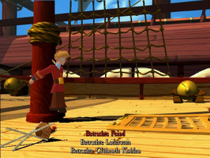 | 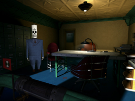 | 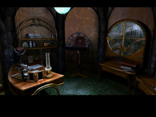 |
| Escape from Monkey Island | Grim Fandango | Myst III: Exile |
Beispieldatei¶
Eine Beispieldatei zu .residualrc kann so aussehen:
[residual] lastselectedgame=grim gameid=grim versioninfo=0.0.6svn [grim] fullscreen=TRUE savepath=/home/BENUTZER/games/saves game_devel_mode=TRUE soft_renderer=FALSE path=/home/BENUTZER/Spiele/GF ;last_set=bk.set gl_zbuffer=TRUE show_fps=FALSE
- Erstellt mit Inyoka
-
 2004 – 2017 ubuntuusers.de • Einige Rechte vorbehalten
2004 – 2017 ubuntuusers.de • Einige Rechte vorbehalten
Lizenz • Kontakt • Datenschutz • Impressum • Serverstatus -
Serverhousing gespendet von